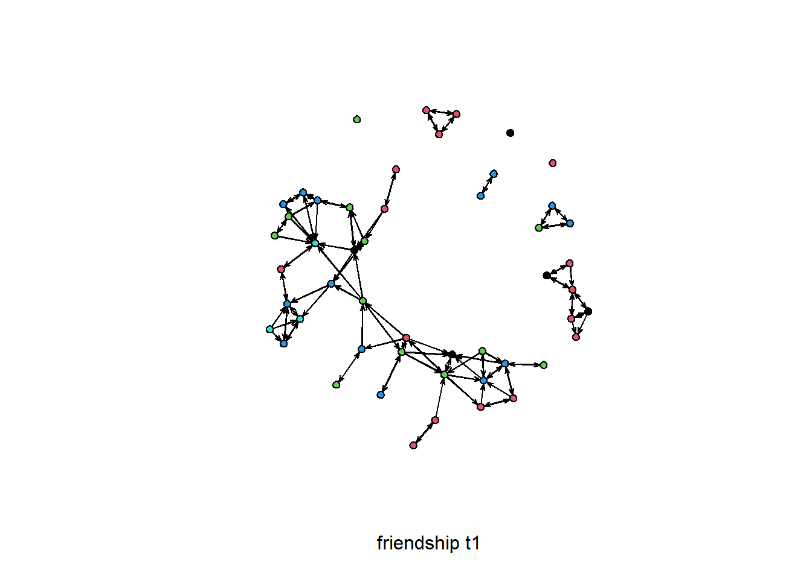
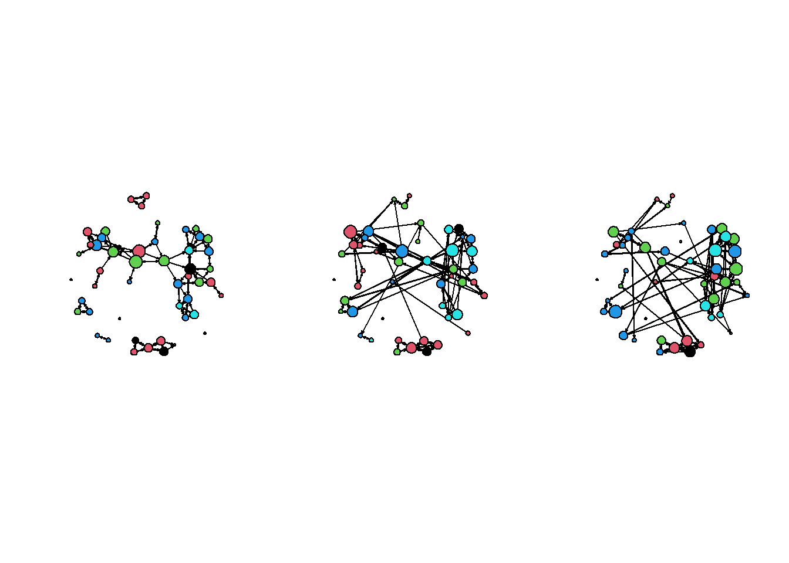

This website converted the following original .R scripts into .rmd files.
- RScriptSNADescriptives.R
- Rscript01DataFormat.R
- Rscript02SienaVariableFormat.R
- Rscript03SienaRunModel.R
- Rscript04SienaBehaviour.R
Please visit GitHub for the latest .R files.
To download this .rmd file use the button in the upper right corner of your screen.
To copy the R code in the code-chunks, use the copy-paste button in the upper right corner of the code-chunks.
0.2 Contact
Specific questions with respect to the .rmd files can be addressed to: Jochem Tolsma.
For questions on RSiena please visit the designated GitHub page.
0.3 Introduction
RscriptSNADescriptives.R: a script for the introduction to RSiena
- Rscript01DataFormat.R is followed by
- RScriptSNADescriptives.R, code for descriptive
analysis of the data, and
- Rscript02SienaVariableFormat.R, which formats data
and specifies the model, and
- Rscript03SienaRunModel.R, which runs the model and
estimates parameters
- Rscript04SienaBehaviour.R, which illustrates an
example of analysing the coevolution of networks and behaviour
- The entire model fitting is summarised at the end of Rscript03SienaRunModel.R (without comments).
This is an R script for getting started with RSiena, written by Robin
Gauthier, Tom Snijders, Ruth Ripley, Johan Koskinen, and Paulina
Preciado, with some examples borrowed from Christian Steglich.
Lines starting with # are not processed by R but treated as comments.
The script has a lot of explanation of R possibilities that will be
familiar for readers well acquainted with R, and can be skipped by
them.
0.4 Getting Started
For this script, you will need the data read and modified in the script Rscript01DataFormat.R. If you have already ran that script, you may load the required workspace:
load("WorkspaceRscript01.RData")Alternatively, you may run the following code-chunk:
library(RSiena) #to access the build-in data
library(network) #to convert
friend.data.w1 <- s501
friend.data.w2 <- s502
friend.data.w3 <- s503
drink <- s50a
smoke <- s50s
net1 <- as.network(friend.data.w1)
net2 <- as.network(friend.data.w2)
net3 <- as.network(friend.data.w3)0.5 Visual inspection
A visual inspection of the adjacency matrices can sometimes be useful. This will, for example, help in highlighting outliers with respect to outdegrees or indegrees, if there are any of such outliers.
sociomatrix net1
require(sna)
plot.sociomatrix( net1, drawlab = F, diaglab = F, xlab = 'friendship t1' )sociomatrix net2
require(sna)
plot.sociomatrix( net2,drawlab = F, diaglab = F, xlab = 'friendship t2' )sociomatrix net3
require(sna)
plot.sociomatrix( net3,drawlab = F, diaglab = F, xlab = 'friendship t3' )0.6 Plotting network data
The class network with attributes names, class, has
special methods associated with it. While
plot( friend.data.w1 ) only produces a rather dull plot of
the first two columns, plot( net1, xlab = 'friendship t1' )
produces a nice sociogram.
# The class,
class( net1 )#> [1] "network"# with attributes
attributes( net1 )#> $names
#> [1] "mel" "gal" "val" "iel" "oel"
#>
#> $class
#> [1] "network"# has special methods associated with it.
# While
plot( friend.data.w1, main="plot( friend.data.w1)" ) 
# only produces a rather dull plot of the first two columns,
plot( net1, xlab = 'friendship t1', main="plot(net1)" )
# produces a nice sociogram0.6.1 Tweaking network plot
- Add the attribute drink to the network object:
net1 %v% "drink" <- drink[ , 1 ]
- Color the nodes by drink:
plot( net1, vertex.col = "drink", xlab = 'friendship t1' )
- Scale the vertex by degree of nodes!
- First calculate degree:
deg <- rowSums( as.matrix( net1 ) )# NB: rowSums() is defined for class matrix - Have a look at the degree distribution:
table( deg, useNA = 'always' )
- First calculate degree:
Now do the desired plot:
plot( net1, vertex.col = "drink", vertex.cex = (deg + 1)/1.5 )
# add the attribute drink to the network object
net1 %v% "drink" <- drink[ , 1 ]
# color the nodes by drink
plot( net1, vertex.col = "drink", xlab = 'friendship t1' )
# Now let's color the nodes by drink and scale the vertex by degree of nodes!
#
# First calculate degree:
deg <- rowSums( as.matrix( net1 ) )# NB: rowSums() is defined for class matrix
# have a look at the degree distribution
table( deg, useNA = 'always' )#> deg
#> 0 1 2 3 4 5 <NA>
#> 4 8 17 15 4 2 0# Now do the desired plot:
plot( net1, vertex.col = "drink", vertex.cex = (deg + 1)/1.5 )
0.7 Plot the three waves of data
# Add drink to waves 2 and 3
net2 %v% "drink" <- drink[ , 2 ]
net3 %v% "drink" <- drink[ , 3 ]
deg2 <- rowSums( as.matrix( net2 ) )
deg3 <- rowSums( as.matrix( net3 ) )
# Create a set of panels ( 1 row by 3 columns, or 3 columns by 1 row)
par( mfrow = c( 1, 3 ) )
# creating three plots after each other will place them in consecutive panels
plot( net1, vertex.col = "drink", vertex.cex = (deg + 1)/1.5 )
plot( net2, vertex.col = "drink", vertex.cex = (deg2 + 1)/1.5 )
plot( net3, vertex.col = "drink", vertex.cex = (deg3 + 1)/1.5 )
Each time we make a plot the coordinates move - because always the starting values are random. We can also save coordinates and use them for later plotting:
par( mfrow = c( 1, 3 ) )
coordin <- plot( net1, vertex.col = "drink", vertex.cex = (deg +1 )/1.5 )
plot( net2, coord = coordin, vertex.col = "drink", vertex.cex = (deg2 + 1)/1.5 )
plot( net3, coord = coordin, vertex.col = "drink", vertex.cex = (deg3 + 1) /1.5 )
To get coordinates based on all three waves:
coordin <- plot( net1 + net2 + net3 ).
For more plotting options, try the gplot function in the
sna library. And try ?gplot and
?gplot.layout.
0.8 Basic network statistics
The package sna can be used for a variety of
descriptions and analyses. The following are examples of some important
graph level statistics
0.8.1 density
gden( net1 ) # density#> [1] 0.046122450.8.2 symmetry and reciprocity
grecip( net1 ) # proportion of dyads that are symmetric#> Mut
#> 0.9714286grecip( net1, measure = "dyadic.nonnull" ) # reciprocity, ignoring the null dyads#> Mut
#> 0.5270270.8.3 transitivity
gtrans( net1 ) # transitivity#> [1] 0.38738740.9 Dyad and triad census
0.9.1 Dyad census
dyad.census( net1 )#> Mut Asym Null
#> [1,] 39 35 11510.9.2 Triad census
triad.census( net1 )#> 003 012 102 021D 021U 021C 111D 111U 030T 030C 201 120D 120U 120C 210 300
#> [1,] 16243 1470 1724 5 18 21 42 30 5 0 15 6 5 2 9 50.10 (out)degree distribution
Of course for a symmetric network outdegree=indegree.
outdegree <- degree( net1, cmode = "outdegree" )
outdegree #outgoing ties of each note#> [1] 2 2 2 2 1 1 3 1 2 3 3 3 0 3 3 2 5 2 4 0 1 4 1 5 3 3 3 1 3 4 3 4 2 2 1 2 3 2 1 3 2 2 2 2 3 3 0 2
#> [49] 2 0hist( outdegree )
quantile( outdegree )#> 0% 25% 50% 75% 100%
#> 0 2 2 3 50.11 distance and connectivity
0.11.1 distance
dist <- geodist(net1, inf.replace = Inf, count.paths = TRUE)
# calculate the geodesic distance (shortest path length) matrix
head(dist$gd)#> [,1] [,2] [,3] [,4] [,5] [,6] [,7] [,8] [,9] [,10] [,11] [,12] [,13] [,14] [,15] [,16] [,17]
#> [1,] 0 2 Inf Inf Inf Inf 3 Inf Inf 2 1 Inf Inf 1 2 2 Inf
#> [2,] Inf 0 Inf Inf Inf Inf 1 Inf Inf 3 1 Inf Inf Inf 2 2 Inf
#> [3,] Inf Inf 0 1 Inf Inf Inf Inf 1 Inf Inf Inf Inf Inf Inf Inf Inf
#> [4,] Inf Inf 1 0 Inf Inf Inf Inf 1 Inf Inf Inf Inf Inf Inf Inf Inf
#> [5,] Inf 7 Inf Inf 0 Inf 7 Inf Inf 8 6 Inf Inf Inf 7 7 4
#> [6,] Inf Inf Inf Inf Inf 0 Inf 1 Inf Inf Inf Inf Inf Inf Inf Inf Inf
#> [,18] [,19] [,20] [,21] [,22] [,23] [,24] [,25] [,26] [,27] [,28] [,29] [,30] [,31] [,32]
#> [1,] Inf Inf Inf Inf Inf Inf Inf Inf 5 Inf Inf 5 4 Inf Inf
#> [2,] Inf Inf Inf Inf Inf Inf Inf Inf 6 Inf Inf 6 5 Inf Inf
#> [3,] Inf Inf Inf Inf Inf Inf Inf Inf Inf Inf Inf Inf Inf Inf Inf
#> [4,] Inf Inf Inf Inf Inf Inf Inf Inf Inf Inf Inf Inf Inf Inf Inf
#> [5,] 5 5 Inf 2 3 6 5 3 6 Inf Inf 7 6 2 1
#> [6,] Inf Inf Inf Inf Inf Inf Inf Inf Inf Inf Inf Inf Inf Inf Inf
#> [,33] [,34] [,35] [,36] [,37] [,38] [,39] [,40] [,41] [,42] [,43] [,44] [,45] [,46] [,47]
#> [1,] 3 Inf Inf Inf Inf Inf Inf Inf Inf 4 Inf 4 Inf Inf Inf
#> [2,] 4 Inf Inf Inf Inf Inf Inf Inf Inf 2 Inf 2 Inf Inf Inf
#> [3,] Inf Inf Inf Inf Inf Inf Inf Inf Inf Inf Inf Inf Inf Inf Inf
#> [4,] Inf Inf Inf Inf Inf Inf Inf Inf Inf Inf Inf Inf Inf Inf Inf
#> [5,] 7 3 6 Inf 2 Inf Inf Inf Inf 8 Inf 7 Inf Inf Inf
#> [6,] Inf Inf Inf Inf Inf Inf Inf Inf Inf Inf Inf Inf Inf Inf Inf
#> [,48] [,49] [,50]
#> [1,] Inf Inf Inf
#> [2,] Inf Inf Inf
#> [3,] Inf Inf Inf
#> [4,] Inf Inf Inf
#> [5,] Inf Inf Inf
#> [6,] Inf Inf Inf# matrix of geodesic distances
head(dist$counts)#> [,1] [,2] [,3] [,4] [,5] [,6] [,7] [,8] [,9] [,10] [,11] [,12] [,13] [,14] [,15] [,16] [,17]
#> [1,] 1 1 0 0 0 0 1 0 0 1 1 0 0 1 1 1 0
#> [2,] 0 1 0 0 0 0 1 0 0 1 1 0 0 0 1 1 0
#> [3,] 0 0 1 1 0 0 0 0 1 0 0 0 0 0 0 0 0
#> [4,] 0 0 1 1 0 0 0 0 1 0 0 0 0 0 0 0 0
#> [5,] 0 1 0 0 1 0 1 0 0 2 1 0 0 0 1 1 1
#> [6,] 0 0 0 0 0 1 0 1 0 0 0 0 0 0 0 0 0
#> [,18] [,19] [,20] [,21] [,22] [,23] [,24] [,25] [,26] [,27] [,28] [,29] [,30] [,31] [,32]
#> [1,] 0 0 0 0 0 0 0 0 1 0 0 1 1 0 0
#> [2,] 0 0 0 0 0 0 0 0 1 0 0 1 1 0 0
#> [3,] 0 0 0 0 0 0 0 0 0 0 0 0 0 0 0
#> [4,] 0 0 0 0 0 0 0 0 0 0 0 0 0 0 0
#> [5,] 1 1 0 1 1 1 1 1 1 0 0 2 1 1 1
#> [6,] 0 0 0 0 0 0 0 0 0 0 0 0 0 0 0
#> [,33] [,34] [,35] [,36] [,37] [,38] [,39] [,40] [,41] [,42] [,43] [,44] [,45] [,46] [,47]
#> [1,] 1 0 0 0 0 0 0 0 0 1 0 1 0 0 0
#> [2,] 1 0 0 0 0 0 0 0 0 1 0 1 0 0 0
#> [3,] 0 0 0 0 0 0 0 0 0 0 0 0 0 0 0
#> [4,] 0 0 0 0 0 0 0 0 0 0 0 0 0 0 0
#> [5,] 1 1 1 0 1 0 0 0 0 2 0 1 0 0 0
#> [6,] 0 0 0 0 0 0 0 0 0 0 0 0 0 0 0
#> [,48] [,49] [,50]
#> [1,] 0 0 0
#> [2,] 0 0 0
#> [3,] 0 0 0
#> [4,] 0 0 0
#> [5,] 0 0 0
#> [6,] 0 0 0table(dist$counts)#>
#> 0 1 2 3 4 6
#> 1811 558 100 20 8 30.11.2 connectivity
Reachability matrix, see ?reachability.
reach <- reachability( net1 ) # calculate the reachability matrix
head(reach)#> [,1] [,2] [,3] [,4] [,5] [,6] [,7] [,8] [,9] [,10] [,11] [,12] [,13] [,14] [,15] [,16] [,17]
#> [1,] 1 1 0 0 0 0 1 0 0 1 1 0 0 1 1 1 0
#> [2,] 0 1 0 0 0 0 1 0 0 1 1 0 0 0 1 1 0
#> [3,] 0 0 1 1 0 0 0 0 1 0 0 0 0 0 0 0 0
#> [4,] 0 0 1 1 0 0 0 0 1 0 0 0 0 0 0 0 0
#> [5,] 0 1 0 0 1 0 1 0 0 1 1 0 0 0 1 1 1
#> [6,] 0 0 0 0 0 1 0 1 0 0 0 0 0 0 0 0 0
#> [,18] [,19] [,20] [,21] [,22] [,23] [,24] [,25] [,26] [,27] [,28] [,29] [,30] [,31] [,32]
#> [1,] 0 0 0 0 0 0 0 0 1 0 0 1 1 0 0
#> [2,] 0 0 0 0 0 0 0 0 1 0 0 1 1 0 0
#> [3,] 0 0 0 0 0 0 0 0 0 0 0 0 0 0 0
#> [4,] 0 0 0 0 0 0 0 0 0 0 0 0 0 0 0
#> [5,] 1 1 0 1 1 1 1 1 1 0 0 1 1 1 1
#> [6,] 0 0 0 0 0 0 0 0 0 0 0 0 0 0 0
#> [,33] [,34] [,35] [,36] [,37] [,38] [,39] [,40] [,41] [,42] [,43] [,44] [,45] [,46] [,47]
#> [1,] 1 0 0 0 0 0 0 0 0 1 0 1 0 0 0
#> [2,] 1 0 0 0 0 0 0 0 0 1 0 1 0 0 0
#> [3,] 0 0 0 0 0 0 0 0 0 0 0 0 0 0 0
#> [4,] 0 0 0 0 0 0 0 0 0 0 0 0 0 0 0
#> [5,] 1 1 1 0 1 0 0 0 0 1 0 1 0 0 0
#> [6,] 0 0 0 0 0 0 0 0 0 0 0 0 0 0 0
#> [,48] [,49] [,50]
#> [1,] 0 0 0
#> [2,] 0 0 0
#> [3,] 0 0 0
#> [4,] 0 0 0
#> [5,] 0 0 0
#> [6,] 0 0 00.12 Network autocorrelation
Moran’s autocorrelation for outgoing ties:
nacf(net1, drink[, 1], type="moran", neighborhood.type='out')[2]#> 1
#> 0.4331431nacf(net2, drink[, 2], type="moran", neighborhood.type='out')[2]#> 1
#> 0.3977745nacf(net3, drink[, 3], type="moran", neighborhood.type='out')[2]#> 1
#> 0.4258017Moran’s autocorrelation for outgoing and incoming ties:
nacf(net1, drink[, 1], type="moran", neighborhood.type='total')[2]#> 1
#> 0.3809011nacf(net2, drink[, 2], type="moran", neighborhood.type='total')[2]#> 1
#> 0.3914719nacf(net3, drink[, 3], type="moran", neighborhood.type='total')[2]#> 1
#> 0.4162185Next: VariableFormat FOR PREPARING DATA FOR RSIENA
Copyright © 2020 Jochem Tolsma